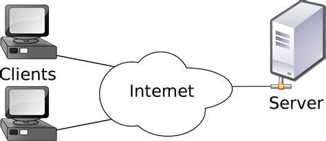

Client Server Architecture
Client Server Architecture is a computing model in which the server hosts, delivers and manages most of the resources and services to be consumed by the client. This type of architecture has one or more client computers connected to a central server over a network or internet connection. This system shares computing resources. Client/server architecture is also known as a networking computing model or client/server network because all the requests and services are delivered over a network.

Advantages of Client-Server model
- Centralized system with all data in a single place.
- Cost efficient requires less maintenance cost and Data recovery is possible.
- The capacity of the Client and Servers can be changed separately.
Disadvantages of Client-Server model
- Clients are prone to viruses, Trojans and worms if present in the Server or uploaded into the Server.
- Server are prone to Denial of Service (DOS) attacks.
- Data packets may be spoofed or modified during transmission.
Reference